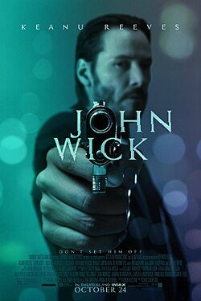
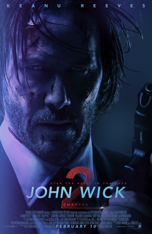
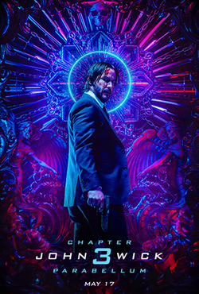

A Saga John Wick
A saga John Wick acompanha a jornada de um lendário assassino de aluguel aposentado que busca vingança e liberdade absoluta contra a Alta Cúpula, a organização secreta que comanda o crime mundial.

John Wick: De Volta ao Jogo (2014)
John Wick vive o luto pela perda de sua esposa, Helen, que morreu de uma doença terminal. Antes de partir, ela deixa um filhote de cachorro para ajudá-lo a lidar com a imensa solidão. Gângsteres russos invadem sua casa, roubam seu Ford Mustang e matam cruelmente o animal de estimação. O ataque destrói o último vínculo emocional que mantinha o protagonista preso à sua vida civil. Tomado pela fúria, ele desenterra suas armas e ativa sua antiga persona, o lendário "Baba Yaga". John passa a caçar os criminosos implacavelmente pelas ruas perigosas de uma Nova York sombria. Ele extermina toda a máfia russa local para vingar a morte de seu cão e recuperar a paz.

John Wick: Um Novo Dia para Matar (2017)
Um chefe da máfia italiana surge cobrando uma antiga e inquebrável promissória de sangue. Forçado pelas regras do submundo, John aceita a missão de assassinar a irmã desse mafioso. Após cumprir o contrato na Itália, ele é traído pelo próprio contratante, que deseja queimar o arquivo. Uma recompensa milionária é aberta, transformando o protagonista no alvo de dezenas de assassinos. Encurralado, John quebra a regra mais sagrada de seu universo ao matar o traidor dentro do hotel. O gerente Winston concede a ele apenas uma hora de vantagem antes que o contrato global comece. John termina o filme correndo para salvar sua vida enquanto se torna oficialmente um homem excomungado.

John Wick: Parabellum (2019)
Com a cabeça a prêmio por 14 milhões de dólares, John foge de caçadores por Nova York. A Alta Cúpula envia uma rígida Juíza para punir todos os aliados que ajudaram o assassino. Ele viaja até o Marrocos para encontrar o Ancião, o líder supremo que comanda todo o submundo. Para obter o perdão, John aceita a ordem de retornar e assassinar seu velho amigo Winston. Ele desiste de cumprir a missão e se une a Winston para defender o hotel contra as tropas. No clímax da batalha, Winston atira em John para recuperar o controle do local perante o conselho. John sobrevive à queda e se alia ao Rei do Crime, prometendo uma guerra sangrenta de vingança.

John Wick: Baba Yaga (2023)
John descobre que o arrogante Marquês de Gramont recebeu poder total para eliminá-lo de vez. O protagonista viaja por Osaka, Berlim e Paris enfrentando exércitos de mercenários altamente treinados. Um velho amigo cego e habilidoso, Caine, é forçado a caçá-lo para proteger a vida da filha. John encontra uma brecha nas antigas leis e desafia o Marquês para um duelo tradicional de honra. O preço para chegar ao local do confronto na igreja de Sacré-Cœur é sobreviver a uma cidade inteira. Ele vence o duelo final ao enganar o Marquês e atirar na cabeça dele no último segundo. Livre de suas obrigações e gravemente ferido, John sucumbe aos ferimentos e conquista sua paz definitiva.